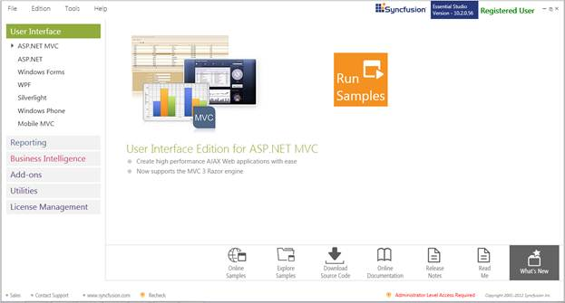
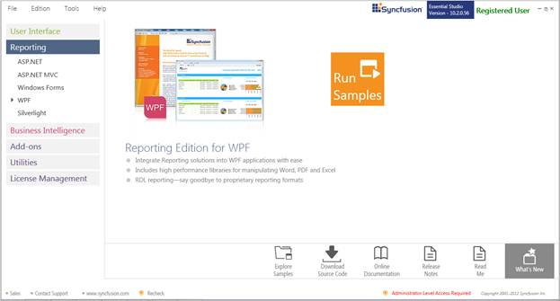
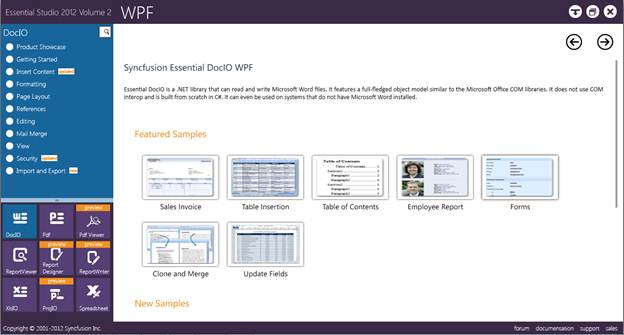
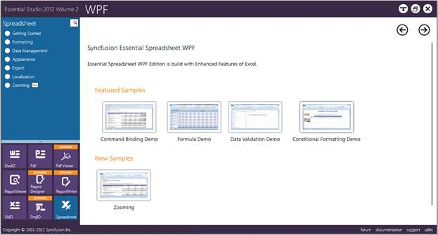

This section covers the location of the installed samples and describes the procedure to run the samples through the sample browser and online. It also lists the location of utilities, assemblies and source code.
Sample Installation Location
The Essential Spreadsheet for WPF samples are installed in the following location, locally on the disk:
...\My Documents\Syncfusion\EssentialStudio\<Version Number>\WPF\Spreadsheet.WPF\Samples\3.5\
Viewing Samples
To view the samples:
1. Click Start-->All Programs-->Syncfusion-->Essential Studio <version number> -->Dashboard. Syncfusion Essential Studio Dashboard <version number> window is displayed. The UI edition is displayed by default.

Figure 1: Syncfusion Essential Studio Dashboard
2. In the dashboard window, click Run Samples for WPF under Reporting Edition panel. The WPF Sample Browser window is displayed.

 Note: You can view the samples in any of the
following three ways:
Note: You can view the samples in any of the
following three ways:
· Run Samples-Click to view the locally installed samples.
· Online Samples-Click to view online samples.
· Explore Samples-Explore WPF samples on disk.
3. DocIO samples are displayed by default.

Figure 2: Default WPF Sample
4. Select Spreadsheet from the bottom-left pane.

Figure 3: Spreadsheet Sample
Source Code Location
The default location of the Essential Spreadsheet for WPF source code is:
[System Drive]:\Program Files\Syncfusion\Essential Studio\<Version Number>\WPF\Spreadsheet.WPF\Src